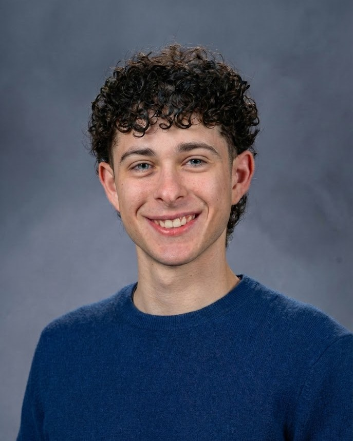

About me

I am a cognitive science researcher. I study memory, attention, and music cognition. I graduated from UC Santa Barbara in 2026 with a B.S. in Psychological & Brain Sciences (Honors) and minors in Philosophy and Media Arts & Design.
From 2024 to 2026 I was a research assistant in the Memory & Decision Making Lab, where I worked on a 64-channel EEG study of recognition memory and completed an honors thesis on rhythm and temporal order memory. I have also produced and DJed techno and ambient music for eight years.
Education
B.S. in Psychological & Brain Sciences (Honors)
UC Santa Barbara, 2022 to 2026. Minors in Philosophy (Cognitive Theory Focus) and Media Arts & Design. GPA 3.69, 5× Dean's Honors.
Google UX Design Professional Certificate
Professional certificate, 2025.
My Timeline
Research, data, music and events. Research first.
- 2025 to 2026
Lead Honors Researcher
Memory & Decision Making Lab, UC Santa Barbara
"Techno on the Brain: Rhythmic Scaffolding and Visual Temporal Order Memory." First-author honors thesis. A within-subjects experiment with 59 participants and four auditory conditions. I programmed the task in jsPsych and analyzed accuracy in R with repeated-measures ANOVAs (Bonferroni-corrected) and linear mixed-effects models. The result was a null effect of rhythm on memory. Advisor: Dr. Michael Miller. Graduate supervisor: Luna Li.
- Fall 2025
Course Research Project
Laboratory in Advanced Research Methods (PSY 120L), UC Santa Barbara
"The Effect of Environmental Sound Effect on False Memory through the DRM Paradigm." A 2×2 between-subjects experiment with 67 participants, built in Qualtrics and analyzed in SPSS with a factorial ANOVA and a Pearson correlation. Best Poster at the course colloquium.
- 2025 to 2026
Co-founder
NOTARAVE, UC Santa Barbara
Co-founded an electronic music collective run with the Music Production Club (150+ members). Booked local Santa Barbara artists and ran promotion. 15+ events, 10,000+ total attendees, and 1,300+ Instagram followers.
- 2024 to 2026
Research Assistant
Memory & Decision Making Lab, UC Santa Barbara
Assisted a graduate researcher on a 64-channel EEG study of recognition memory. Collected behavioral and EEG data, preprocessed recordings in MATLAB and EEGLAB (filtering, ICA artifact rejection, epoching), and supported ERP analysis in R. Recruited and scheduled participants, ran consent and intake sessions, maintained IRB documentation and amendments, trained incoming research assistants, and presented literature reviews at lab meetings.
- 2021
Event Production Lead
TEDxYouth@ACS, Beirut
Led a 10-person video team for livestream, recording, and post-production. The footage was published on the TEDx Talks YouTube channel.
- 2019
Market Intelligence Analyst (Intern)
Industry Intelligence Inc., Los Angeles
Organized large corporate-structure datasets and carried out competitive landscape analysis in Excel and SQL.
- 2017 to present
Sound Designer & Music Producer
Freelance
Freelance sound design and music production in Ableton Live and FL Studio. I produce and DJ techno and ambient music.
My Skills
I design experiments and surveys, collect behavioral and EEG data, and analyze the results in R, SPSS, and MATLAB. Alongside research I produce music and run events.
Research & statistics
- Experimental design
- Survey design
- Repeated-measures & factorial ANOVA
- Linear mixed-effects models
- EEG data collection & preprocessing
- IRB documentation
Data & analysis
- R
- Python
- SPSS
- SQL
- Excel
- MATLAB / EEGLAB
- Qualtrics
- jsPsych
Music & design
- Ableton Live
- FL Studio
- Sound design
- Music production
- Figma
- Adobe Creative Suite
Languages
- English Native
- Arabic Native
- French Advanced
- Spanish Advanced
Open to research, analyst, and music-industry roles.